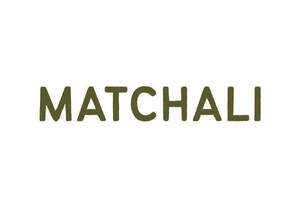
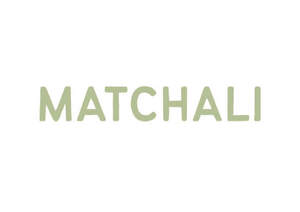

Trade Mark Journal No.2025/025 20 June 2025
UK00004211688 30 May 2025 (21,25,30,32,33,35,41,43,45)
Mark 1
Mark 2
Mark 3

Mark 4

Mark 5
- Class 21
- Tumblers; mugs; cups; bottles; glassware; reusable drinking vessels; household and kitchen containers.
- Class 25
- Clothing; T-shirts; sweatshirts; hoodies; caps; tote bags; socks; headwear.
- Class 30
- Matcha; tea; coffee; tea-based beverages; matcha-based beverages; coffee-based beverages; bakery products; confectionery containing matcha.
- Class 32
- Non-alcoholic beverages; soft drinks; sparkling tea drinks.
- Class 33
- Alcoholic beverages; cocktails; matcha-based alcoholic beverages; ready-to-drink alcoholic beverages containing tea or matcha.
- Class 35
- Retail and online retail services connected with the sale of tea, matcha, coffee, beverages, packaged food, bakery products, apparel, drinkware, and café-related merchandise; promotional and marketing services; brand collaborations.
- Class 41
- Arranging and conducting workshops, classes, seminars and live events in the fields of tea preparation, matcha culture, wellness, and food and beverage education; providing cultural experiences and tastings.
- Class 43
- Café services; tea bar services; coffee shop services; preparation and serving of food and drink for consumption on and off the premises; takeaway food and drink services; pop-up café services.
- Class 45
- Licensing of intellectual property; brand licensing; franchising of cafés and tea bar services; legal and consultancy services relating to the management and exploitation of brand and trademark rights.
Matchali Limited